S15 · 主控四项裁决落地：色相口径、cyber_01、待决项 A，以及换图换出来的真缺陷
- S15-A：色相判读改成"只计版式自己加的颜色"，判读线一个数字没动（
hard_gates/moves/lineages/forbidden与 HEAD 逐字段等值已实测）。12 款存量里 11 款转绿，剩 1 款是 cyber_01 的紫禁令——正好是 ② 的范围。 - S15-B：cyber_01 紫占比 23.4% → 0.00%，零出图。换图过程中量出版式自己的老毛病：底部条码/序列号一直裸压在底图上，旧底图恰好是暗角夜景才没出事——换 3406 后序列号只有 1.18:1。已按根因修（版式自带右下羽化纱罩，只罩元数据那一簇、不动主体白礼服），成品实测 中位 6.91:1 / 最不利 5% 4.78:1，均过 AA 4.5:1。
- S15-C：散文→evidence 确定性抽取接进 N1，同一夹具前后对照
[W-07] 6 → 1，剩下的那 1 条正是纯自指的「写在最后」页——抽取没有把门禁喂饱；同时新增 1 条[W-12]（原文没有参照值的数字，不编 baseline，照判红）。blocking 16 → 12。
1. S15-A · 色相口径：底图派生的不计入
1.1 改的是什么，没改的是什么
判据文件 data/poster_gate.json 只新增一个 hue_exemption 块，四段判据原文与 HEAD 逐字段比对：
$ python3 -c "比对 HEAD 与工作区的 hard_gates / moves / lineages / forbidden" UNCHANGED hard_gates UNCHANGED moves UNCHANGED lineages UNCHANGED forbidden added top-level keys: ['hue_exemption'] removed top-level keys: []
热桶线沿用改造前同一个数值 hot_bucket_share_min = 0.003，既用来判"这个相位热不热"，
也用来判"版式到底给这个相位加了量没有"——没有新增任何可调数字。
紫色大面积渐变禁令明确不在豁免范围，判读线（成品紫占比 <4%）一字未动。
1.2 口径怎么落地
成品图按原生分辨率做 24 桶 HSV 统计，找出热色相组，逐分桶比
「成品占比 − 底图在该相位邻域（同桶加左右各一桶，即 ±15°）的最大占比」；
组内只要有一个分桶的差值 ≥ 0.003，该组算版式自加并计入 accentHues；
整组都不比底图邻域多，判为底图派生，不计入。纯平涂版式（sach_01，无底图）不享豁免。
为此渲染器加了 POSTER_BASES（版式 key → 底图文件，单一来源），10 个渲染函数改走
base_asset(key)；未登记即抛错，不让门禁与真实渲染脱钩。
- 第一版按"底图同桶未达热线就免"判，把 swiss_01 唯一的瑞士红判成了底图派生——错在照片的青色在成品里跨桶展宽。改成拿底图邻域最大占比做基准。
- 改成邻域后，反向自检第③查仍然失败（
Δ={165: 0.00333}）。根因不在判据，在测量：S9 遗留的 300×300 BICUBIC 缩图会在每道颜色边界造出一圈异相色环，把底图羽化误计成版式加色。取消缩图、按原生分辨率取样后消失。全量对照：只有 cyber_01 的紫占比由 23.9% 变 23.4%，无一因此改判。
1.3 反向自检：证明豁免没把门禁变成哑巴
$ python3 scripts/test_poster_gate.py
[OK ] 豁免① 底图没有的色相加上去必须判红 自加=[135, 330] 数=2 线≤1 → 红（拦住了）
[OK ] 豁免② 版式自铺紫色渐变必须仍被紫禁令拦住 紫占比=25.0% 禁≥4%
[OK ] 豁免③ 未超出底图邻域占比的色相确实被豁免 自加=[] 豁免=[180] Δ={180: -0.25}
[OK ] 豁免④ 版式放大底图已有色相必须仍计入 自加=[180] 放大={180: 0.5} 线≥0.3%
[OK ] gate.baseAssetsRegistered 10 个底图全部在盘（纯平涂 key 不计）
…
通过 17 / 失败 0 （两次运行输出逐字节一致）
1.4 存量 12 款重测（实际输出，S15-B 之后）
[调研:过] swiss_01 版式自加相=[330] 数=1 | 豁免=[0, 195] 放大={330: '+2.2%'} | 紫=0.0%
[调研:过] swiss_02 版式自加相=[] 数=0 | 豁免=[315, 60, 135] | 紫=0.2%
[调研:过] article_01 版式自加相=[] 数=0 | 豁免=[0, 195] | 紫=0.0%
[调研:过] article_02 版式自加相=[] 数=0 | 豁免=[15, 165, 210] | 紫=0.0%
[调研:过] cyber_01 版式自加相=[180] 数=1 | 豁免=[15] 放大={180: '+0.7%'} | 紫=0.0% ← S15-B 后
[调研:过] cyber_02 版式自加相=[] 数=0 | 豁免=[0, 165] | 紫=0.0%
[调研:过] chinese_01 版式自加相=[] 数=0 | 豁免=[0, 150, 180] | 紫=0.0%
[调研:过] chinese_02 版式自加相=[] 数=0 | 豁免=[15, 165] | 紫=0.0%
[调研:过] cinema_01 版式自加相=[] 数=0 | 豁免=[0, 195] | 紫=0.0%
[调研:过] cinema_02 版式自加相=[] 数=0 | 豁免=[0, 195] | 紫=0.0%
存量重测汇总：仍触线 0 款 —— 无；其余在新口径下转绿。
改造前这批里判红的是色相数与紫禁令；改完后唯一仍然触线的是 cyber_01 的紫禁令（23.4%）， 它不是被新口径放过的——紫禁令不参与豁免，所以它必须靠换底图解决，这就是 S15-B。
1.5 这个口径的已知漏检（如实登记，不藏）
版式自己加的色相如果和底图落在同一分桶、且占比没超过底图，本口径看不见。S15-A 时点实测：
| key | 版式 CSS 里的自加色 | 成品占比 / 底图邻域占比 | 本口径判读 |
|---|---|---|---|
| cyber_01 | #00f0ff 180° | 2.84% / 8.63% | 漏检（旧底图本身青蓝重） |
| cyber_01 | #3b82f6 210° | 8.94% / 9.22% | 漏检 |
| article_01 | #cc4444 0° | 4.88% / 20.58% | 漏检 |
| chinese_01 | #b91c1c 0° | 0.87% / 4.37% | 漏检 |
| cinema_02 | #d4af37 45° | 0.24% / 4.40% | 漏检 |
| cyber_02 | #00ff66 150° | 0.30%（Δ +0.28%） | 差 0.02 个百分点就计入 |
| cyber_02 | #ff007c 330° | 0.03% | 未达热线 |
兜底靠 forbidden 清单与规格侧 accent_hues 声明；执行者不得再自行扩大豁免范围。
建议主控给 cyber_02、cinema_02 补 gate 规格声明（补声明是加判据，不是松判据）。
1.6 看成品（不看绿灯）
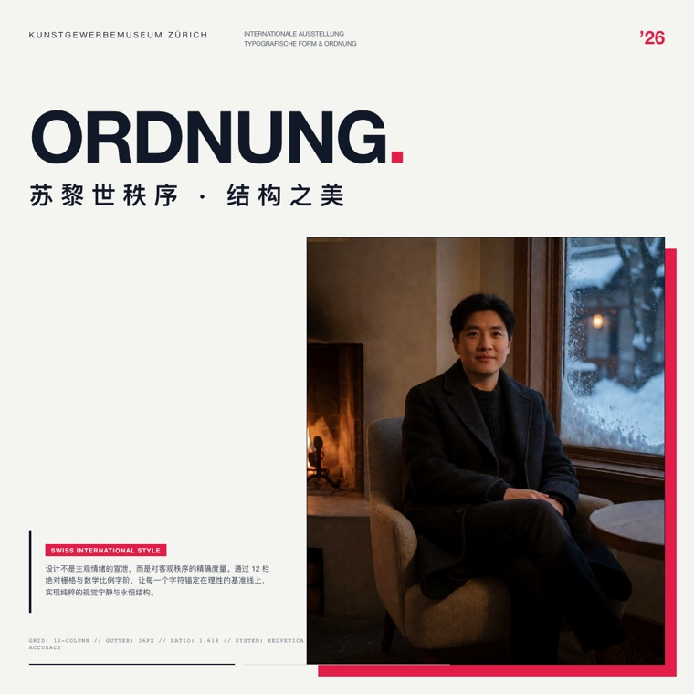
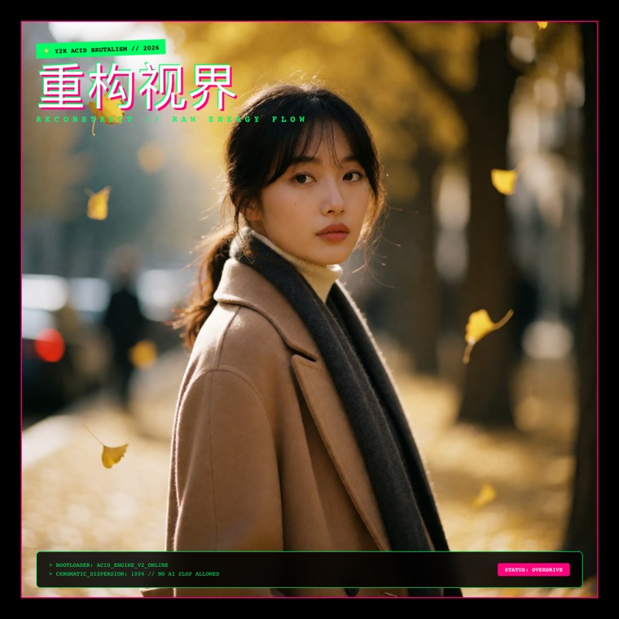
2. S15-B · cyber_01 换素材库存图重渲（零出图）
2.1 归因先做实：紫在底图，不在版式
底图 agnes_1789995703_1047.png 紫占比=26.55% 前三相桶=[270°:9.95%, 210°:9.22%, 285°:8.76%] 成品 poster_pro_cyber_01.png 紫占比=23.4% 热相组=[165]（被豁免，因为底图同相位更多）
版式 CSS 里没有紫色（它的自加色是 #00f0ff/#3b82f6），所以"重渲"根本无效，必须换底图——与主控裁决一致。
2.2 筛选：库存空闲图，两条能测的 + 一条只能看的
① 紫占比 <1%（与门禁同一算法：24 桶、原生取样、分母为像素总数）；② 悬挂卡片（1200 画布 x60–620 / y60–400）不切五官；
③ 底部序列号 #94a3b8 对该处底图 ≥4.5:1。
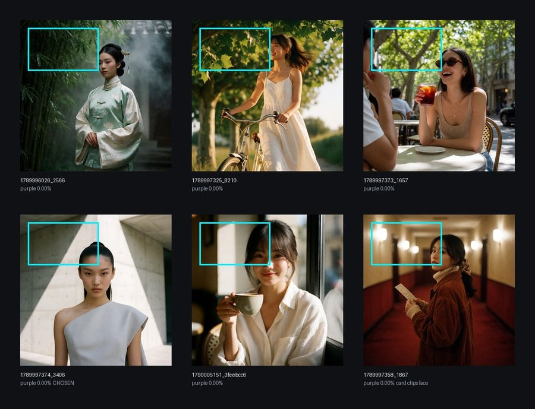
六张入围底图，青框 = cyber_01 悬挂卡片在底图坐标系里的实际位置（1024 底图按 1024/1200 折算）。 标签里的紫占比是这张图现算的，与门禁同一把尺子。
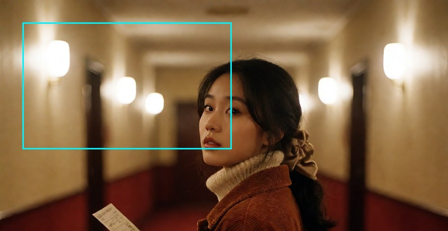
1867：卡片右边界从主体左眼与鼻梁之间穿过，眉、眼、鼻都在框内 —— 否。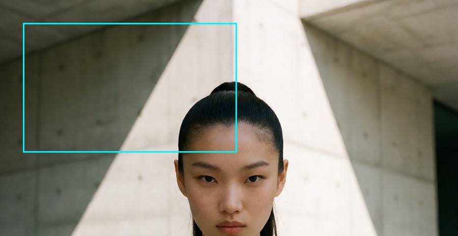
3406：卡片右下角压到发髻轮廓，五官（眉以下）全在框外。压头发可以接受，压眼睛不行 —— 取。判据③反过来看才是真问题：旧底图 1047 底部中位 (31,30,59) → 6.27:1 过线，而入选的 3406 裸底只有 (174,175,185) → 1.18:1。 这说明"底部够暗"是底图碰巧满足的条件，不是版式保证的条件——所以这一条从选图判据改成了版式自带（见 2.3）， 选图时不再要求。
agnes_1789996026_2566（竹林汉服，
卡片区无遮挡、裸底序列号 6.18:1、紫 0.00%）。放弃理由不在指标里：新中式母题与 cyber_01 自述的
「机能战术 · HUD 工业取景」冲突，且主体偏小、卡片下方大片空竹——拿审美去换绿灯不算提质。2.3 换图换出来的真缺陷（这条是本阶段最有价值的发现）
先试 1867（酒店走廊夜景，回眸与文案「机甲回眸铁骨新」字面相符）。门禁全绿，但卡片切到五官，按成品否掉
（叠加图见 2.2）。换 3406（清水混凝土野兽派，契合版式自述的"工业取景"）后，底部元数据塌了：
裸底图 3406 序列号带 x812–1170 / y1120–1152 背景中位 (174,175,185) → #94a3b8 1.18:1 裸底图 3406 条码带 x860–1165 / y1086–1114 背景中位 (230,220,215) → 白 1.35:1 （AA 线 4.5:1） 裸底图 1047 同两带 (31,30,59) → 6.27:1 / 16.79:1
这不是新底图的错，是版式一直有的毛病：条码和序列号裸压在底图上，从来没有对比度保险，
旧底图恰好是暗角夜景才一直没暴露。所以按根因修，而不是去猜一张"底部刚好是黑的"图：
给 cyber_01 加一层羽化渐隐纱罩（取版式自身的 #06080d，明度 0.05 低于门禁取样下限 0.15，不参与相桶统计；
渐变无矩形硬边，避开 S14 记下的"雾罩矩形观感"遗留）。
纱罩本身迭代了三轮，每轮都由成品像素决定下一步：
| 轮 | 几何 | 序列号中位 / 最不利5% | 主体白礼服下摆（x300–650 / y1050–1180 均值） | 结论 |
|---|---|---|---|---|
| 1 | 整幅 × 340px，α 0.90→0.62@42% | 4.98:1 / 3.80:1 | 128 → 69（被压灰） | 可读性不达标，且为装饰小字牺牲主体 |
| 2 | 整幅 × 340px，α 0.94→0.84@30% | 6.42:1 / 4.49:1 | 128 → 69 | 勉强擦线，主体仍被压 |
| 3 | 右下 520×230px，α 0.96→0.90@35%，左缘 mask 羽化 14% | 6.91:1 / 4.78:1 | 128 → 128（完全不动） | 取 |
第 3 轮成品像素实测（背景统计已剔除字形与其抗锯齿边缘，非推断）：
序列号带 x812–1170 / y1120–1152 背景中位 (23,24,29) 对比 6.91:1
最不利 5% (41,55,63) 对比 4.78:1 （AA 4.5:1）
条码带 x860–1165 / y1086–1114 背景中位 (45,42,44) 条色(0.8 白叠底) (213,212,212) 对比 9.63:1
门禁同步复跑：通过 17 / 失败 0，cyber_01 判读逐字未变（版式自加相=[180] 数=1 | 豁免=[15] | 紫 0.0%）。
2.4 看成品：换图前后
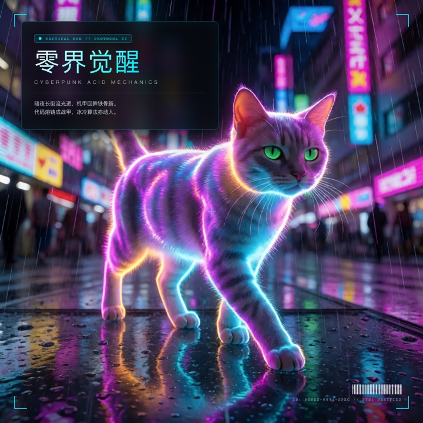
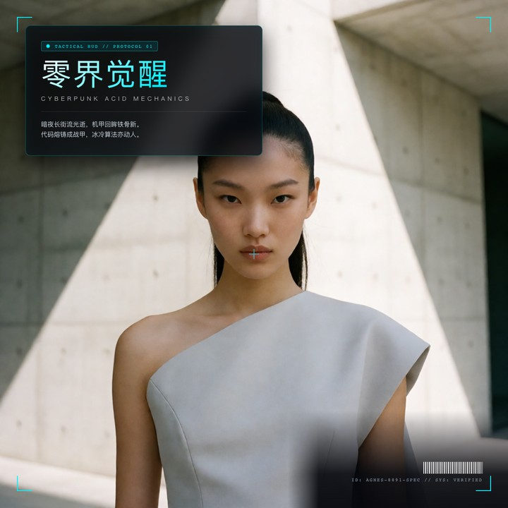
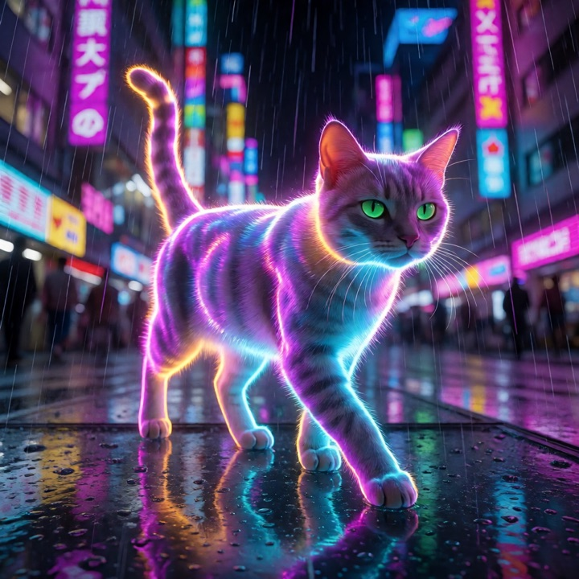
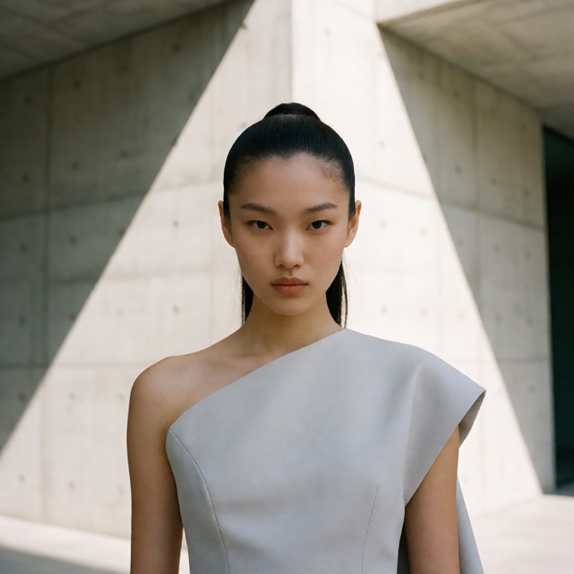
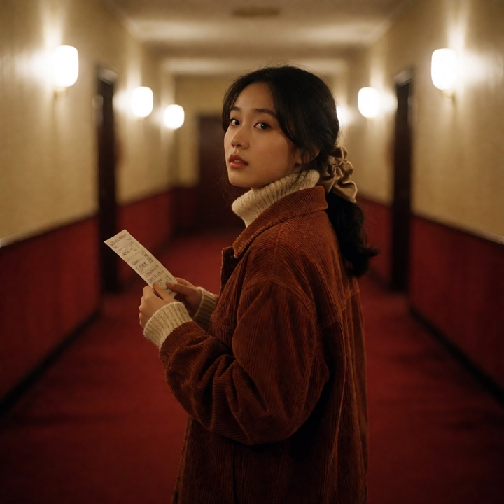
底部原生裁切复核（900px 全幅看不出 11px 字的实际观感，所以单独放大看）：
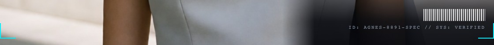
上图：原生 1:1 条带 x40–1160 / y1070–1175（文件即成品像素 1:1 裁出，未做任何重采样；页面显示时按容器缩放，放大到 100% 即为原始像素）。可见底部元数据是右对齐的一簇，
左侧两格宽带是干净的暗纱——纱罩的羽化边界在这里看得最清楚：没有矩形硬边。
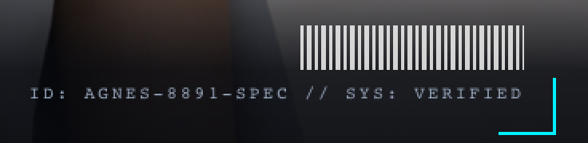
下图：同一成品 x812–1180 / y1075–1165 原生窗口最近邻放大 2×（不重采样，只看真实像素）。
条码条纹根根可分；«ID: AGNES-8891-SPEC // SYS: VERIFIED» 逐字可读；右下角 HUD 青角标未被纱罩压掉——
纱罩在角标之下（.bottom-hud 有 z-index:10，纱罩无 z-index，靠 DOM 顺序落在角标与卡片之下）。
poster_pro_cyber_01.png 直接 crop() 的窗口，坐标即图中所写。
顺带纠正一处口径：成品画布是 1200×1200，初稿按 1080×1440 写坐标，全部作废重写。2.5 换图后的门禁判读（关键：版式自加的青没被豁免吞掉）
[调研:过] cyber_01 版式自加相=[180] 数=1 线≤1 | 豁免(底图派生)=[15] 放大={180: '+0.7%'} | 底图热相=[15] | 紫色占比=0.0% 禁≥4%
旧底图下 HUD 青是"漏检"的（底图本身青蓝更重）；换成暖灰混凝土底图后，青变成 Δ+0.7% 被如实计入——
1 个色相，正好在 accentHues_max=1 线内。同一张判据在两种底图给出了不同答案，说明它测的是真东西。
3. S15-C · 散文→evidence 确定性抽取（只批了 A，B/D 未动）
3.1 缺口定位
plan_narrative.build() 只从列表项 / 表格行取证据，纯散文正文一句取不到。
run2 的 6 条 [W-07] 全部出在这个缺口上（那篇文章的正文是一段句子的纯散文）。
3.2 新增 evidence_from_prose.py：四条红线写进 docstring，各有自检
- 只搬运不改写：
text必须是原文连续子串（自检 A2 直接断言in 原文）。 - 必须可回指：行号沿用
split_sections的口径（测试用真实 splitter 喂，不手算偏移——上一版手算 off-by-one 把对的实现判成了错的）。 - 不无中生有：自指句（本篇/本文/见附录…）、过碎片段、列表/标题/引用/表格行一律不取；抽不出就返回空，让 W-07 继续判红。
- 不碰判据数字：
kind沿用存量kind_of；baseline只在原文字面含参照值（"从 X 改成 Y"）时才填，填不出留 None 让 W-12 照判红。
接入方式保守：只在"一条证据都没取到"时才兜底跑 prose 路径，取到过的节不掺 prose，避免同一页两种口径。
3.3 同一夹具前后对照（只开关抽取，判据一字未改）
$ python3 scripts/plan_narrative.py --md .../run2/article/article.md --out .../run6/narrative.json $ python3 scripts/check_narrative.py .../run6/narrative.json .../run2/article blocking 12 条 / 需人读 11 条 （改造前 run2：blocking 16 条）
| 页 | 节 | 抽取前 | 抽取后 | 为什么 |
|---|---|---|---|---|
| 01 | 是什么 | W-07 | W-12 | 抽到 52 字证据，但"42 个团队 / 4.5 小时"原文没有参照值，不编 baseline → 换个更准的红 |
| 02 | 变了什么 | W-07 | 消解 | 原文字面含"从 60 分钟改成 25 分钟" → baseline=60 分钟 |
| 03 | 为什么 | W-07 | 消解 | 无数字，kind=text，不需要 baseline |
| 04 | 意味着什么 | W-07 | 消解 | 原文字面含"从 1.8 小时提高到 2.6 小时" → baseline=1.8 小时 |
| 05 | 反例与边界 | W-07 | 消解 | 抽到反例句；"两家/两个月/翻倍"是中文数词，kind_of 只认阿拉伯数字 → 落 text（见 3.5 ①） |
| 06 | 写在最后 | W-07 | 仍然判红 | 整节只有"本篇基于 5 条…写成 / 更多未经验证的发现见附录"——自指套话，抽取拒绝硬凑 |
页 07（附录）走的是存量 bullet 路径，本来就非空，本次未动。
3.4 自检输出
$ python3 scripts/test_evidence_from_prose.py [E] 反向查：抽取没有把门禁喂成哑巴 PASS E1 纯自指段抽不出任何证据 W-07 在这一页必须仍然亮 PASS E2 过碎片段不算证据 PASS E3 列表/标题/引用/表格行不走 prose 路径 PASS E4 ≤3 条上限（只收紧不放宽，与写作 skill 的 evidence_points≤3 同数） [F] 端到端（run2 真实夹具） PASS F1 同一夹具：开抽取前 W-07 条数 = 6 PASS F2 开抽取后 W-07 只剩 1 条，且剩的是纯自指的「写在最后」页 PASS F3 消解的 5 条各自有可回指、逐字可查的证据 PASS F4 新增的 blocking 是 W-12（数字证据无字面 baseline），不是被绕开 3 条 PASS F5 W-19 零命中：所有 prose source 都能 resolve_source 解析 PASS F6 W-24（待决项 B，本轮未批）条数未变 8 条 PASS F7 判据常量零改动 通过 25 / 失败 0 （两次运行输出逐字节一致）
3.5 三项如实上报，未擅自处理
kind_of只认阿拉伯数字：「两家团队 / 两个月 / 翻倍」落进kind=text，W-12 看不见。这是存量判据的盲区，改它等于改判据 → 归主控。- 两条通路口径不一致：句末引用括号只有 prose 路径会剥，bullet 路径（页 07 三条）仍把「（example.net）」带进 evidence 文本、进而进 deck。一行可修，但会动存量 evidence 文本与既有断言 → 归主控。
- 散文证据 46–58 字，超写作 skill 的
evidence_points ≤3×≤24预算。版式影响未实测：链路仍被 8 条W-24（待决项 B 未批）拦在出 deck 之前，拿不到真实排版。列为遗留，不虚报。
4. 回归、合规与仍未闭环
4.1 全量回归（原样留档 e2e/run6/regression-s15.txt）
ppt-studio 11 套件：test_check_narrative 26/0 · test_evidence_from_prose 25/0 · test_image_route 19/0 test_layout_recipes 24/0 · test_plan_contract_sections 9/0 · test_plan_narrative 34/0（无回归） test_qa_layout_fixes · test_qa_scale_and_contrast 17/0 · test_spec_tokens 17/0 test_topic_to_deck 29/0 · test_write_article 26/0 —— 全部 exit=0 AGNES 3 套件：test_poster_gate 17/0 · test_poster_contrast 16/0（S14 无回归）· test_gemini_integration 7 项全过 —— exit=0
4.2 合规
- 判据零改动：AGNES
hard_gates/moves/lineages/forbidden与 HEAD 逐字段等值（§1.1 输出）；pptCOPY_MAX=0.40、REQUIRED、各 W-xx 判据未增删（F7 断言）。放宽与否只由主控决定。 - 零新依赖（只用 stdlib + 已有 numpy/Pillow）、零 LLM 调用、零生图调用、未创建
.env。 - Chrome 纪律：每批 2 页、批间进程退出；纱罩三轮调参各开 1 批（共 3 批），全程未触发窗口服务异常；8088 服务（PID 2252）未触碰。
git add全部按文件名精确；无-A/无./无 stash/无 reset/无 push；提交后cards/、._、密钥明文扫描命中 0。
4.3 仍未闭环（按主控归属列清）
| 事项 | 归属 | 现状 |
|---|---|---|
S13 待决项 B：8 条 so_what | 主控 | 本轮未批，未动。blocking 里仍占 8 条 |
| S13 待决项 D：W-18 照抄率在文章→deck 路径是哑的 | 主控 | 本轮未批，未动（src_text 仍只读 README.md） |
cyber_02 / cinema_02 建议补 gate 规格声明 | 主控 | S15-A 漏检表给出的建议，执行者未擅自加判据 |
| cyber_01 示例文案与底图不再贴合 | 主控 | 「暗夜长街流光逝 / 机甲回眸」原为夜景底图写，换混凝土底图后意象落空；属示例文案层，未擅改 |
| S14 遗留：雾罩矩形观感 / 桥接稿 552px 上 1px 笔画档不可信实测 | 主控 | 未动，仍在 ROADMAP |
| 8088 → 8089 切换 | 用户 | 按裁决保持并行，8088 未动 |
| 散文证据长度 vs 版式 ≤24 字预算 | 主控 | 需 B 批了、能出 deck 之后才测得准 |
| 纱罩只修了 cyber_01 一款 | 主控 | 本次量出的"底部元数据裸压底图"是 cyber_01 的版式缺陷，其余带底图版式是否同病未逐款量过，未擅自推广。 试过一条捷径：按"右下角带亮度"批量筛查，已作废——swiss_02 / sach_01 右下角 100% 过亮却是深色字压在浅底上，不构成缺陷；该代理量隐含"小字一律浅色"的假设，逐款不成立。要量准必须读每款版式的实际字色与坐标。 |
steampunk_tech 与 cyber_01 是同一款 | 主控 | 复跑渲染时发现两者产物逐像素相同（改动前旧图 max 差 = 0，标题文案都一样）：同一渲染函数的两个 key。即"12 款版式"里有两格是虚的，本次纱罩改动也一并落到了 steampunk_tech 上（不是回归，是它本来就等于 cyber_01）。要么给它独立版式，要么并档。 |